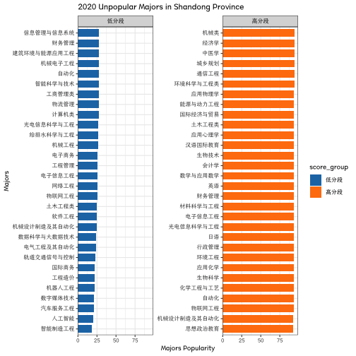
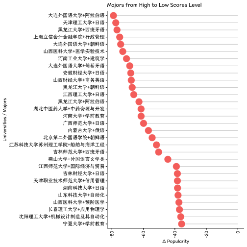
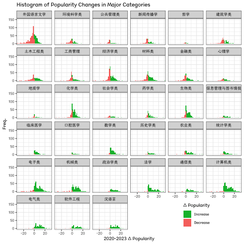
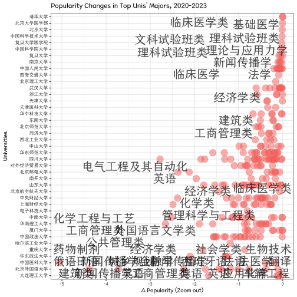

Changes in Popular Majors from 2020 to 2023
knitr::opts_chunk$set(echo = TRUE)
knitr::opts_knit$set(root.dir = "/Users/sousekilyu/Documents/GitHub/GaoKaoVer2")Data preparation
source("~/Documents/GitHub/GaoKaoVer2/main/etl.R")## Joining with `by = join_by(school)`source("/Users/sousekilyu/Documents/GitHub/GaoKaoVer2/main/function.r")热门专业变化趋势分析
热门专业，冷门专业
.hot <- dt_rank_cmb_rough %>%
group_by(year, major) %>%
summarise(avg_scores = mean(score_by_major_scale, na.rm = TRUE),
countn = n()) %>%
ungroup() %>%
filter(countn >= 10, year %in% c(2020, 2023)) %>%
arrange(desc(avg_scores)) %>%
group_by(year) %>%
ggcharts::bar_chart(major, avg_scores, fill = as.factor(year), facet = as.factor(year), top_n = 30) +
theme_bw() +
theme(text = element_text(family = "Canger", size = 10)) +
labs(title = paste0("Popular Majors in Shandong Province"), x = "Majors", y = "Majors Popularity")## `summarise()` has grouped output by 'year'. You can override using the `.groups`
## argument.print(.hot)ggsaveTheme(.hot,
mytheme = my_theme,
filename = "plot/Figure 0-1.png",
width = 12,
height = 16,
dpi = 300
)
.cold <- dt_rank_cmb_rough %>%
group_by(year, major) %>%
summarise(
avg_scores = mean(score_by_major_scale, na.rm = TRUE),
countn = n()
) %>%
ungroup() %>%
filter(countn >= 10, year %in% c(2020, 2023)) %>%
arrange(avg_scores) %>%
group_by(year) %>%
ggcharts::bar_chart(major, avg_scores, fill = as.factor(year), facet = as.factor(year), top_n = -30) +
theme_bw() +
theme(text = element_text(family = "Canger", size = 10)) +
labs(title = paste0("Unpopular Majors in Shandong Province"), x = "Majors", y = "Majors Popularity")## `summarise()` has grouped output by 'year'. You can override using the `.groups`
## argument.print(.cold)ggsaveTheme(.cold,
mytheme = my_theme,
filename = "plot/Figure 0-2.png",
width = 12,
height = 16,
dpi = 300
)热门专业与考生成绩分布关系
高分段考生 vs 低分段考生
score_by_major_group_time <- dt_rank_cmb_rough %>%
group_by(year) %>%
arrange(score_by_major_scale) %>%
mutate(
score_group = cut(
score_by_major_scale,
breaks = c(-Inf, 50, 70, 90, Inf),
labels = c("低分段", "中低分段", "中高分段", "高分段")
)
) %>%
arrange(score_by_school_scale) %>%
mutate(
score_group_school = cut(
score_by_school_scale,
breaks = c(-Inf, 50, 70, 90, Inf),
labels = c("低分段", "中低分段", "中高分段", "高分段")
)
)
head(score_by_major_group_time)## # A tibble: 6 × 14
## # Groups: year [2]
## 院校 major frequency rank_by_major rank_by_school year school city province
## <chr> <chr> <dbl> <dbl> <dbl> <dbl> <chr> <chr> <chr>
## 1 C928泉州… 油气… 10 260585 256142 2020 泉州… 泉州… 福建省
## 2 C928泉州… 汽车… 5 259516 256142 2020 泉州… 泉州… 福建省
## 3 C928泉州… 计算… 5 257697 256142 2020 泉州… 泉州… 福建省
## 4 C928泉州… 机械… 5 256142 256142 2020 泉州… 泉州… 福建省
## 5 D857山东… 房地… 90 250390 243940 2021 山东… 德州… 山东省
## 6 D857山东… 道路… 45 249705 243940 2021 山东… 德州… 山东省
## # ℹ 5 more variables: score_by_major_scale <dbl>, score_by_school_scale <dbl>,
## # major_rough <chr>, score_group <fct>, score_group_school <fct>generate_plot <- function(time, top_n, title) {
plot <- score_by_major_group_time %>%
filter(
score_group %in% c("低分段", "高分段"),
year == time
) %>%
group_by(score_group, major) %>%
summarise(avg_scores = mean(score_by_major_scale, na.rm = TRUE),
countn = n(), .groups = "keep") %>%
filter(countn >= 10) %>%
group_by(score_group) %>%
ggcharts::bar_chart(major, avg_scores, fill = score_group, facet = score_group, top_n = top_n) +
theme_bw() +
theme(text = element_text(family = "Canger", size = 10)) +
labs(title = paste0(time, " ", title), x = "Majors", y = "Majors Popularity")
}
# Generate plots
# 2020
p1 <- generate_plot(2020, 30,
title = "Popular Majors in Shandong Province")
print(p1)
ggsaveTheme(p1,
mytheme = my_theme,
filename = "plot/Figure 1-1.popular_major_by_score_2020.png",
width = 12,
height = 16,
dpi = 300
)
# 2023
p2 <- generate_plot(2023, 30,
title = "Popular Majors in Shandong Province")
print(p2)
ggsaveTheme(p2,
mytheme = my_theme,
filename = "plot/Figure 1-2.popular_major_by_score_2023.png",
width = 12,
height = 16,
dpi = 300
)
p3 <- generate_plot(2020, -30,
title = "Unpopular Majors in Shandong Province"
)
print(p3)
ggsaveTheme(p3,
mytheme = my_theme,
filename = "plot/Figure 1-3.unpopular_major_by_score_2020.png",
width = 12,
height = 16,
dpi = 300
)
# 2023
p4 <- generate_plot(2023, -30,
title = "Unpopular Majors in Shandong Province"
)
print(p4)ggsaveTheme(p4,
mytheme = my_theme,
filename = "plot/Figure 1-4.unpopular_major_by_score_2023.png",
width = 12,
height = 16,
dpi = 300
)从低分段 跃迁至高分段的 学校和专业
## 所有高校
# (中)高分段=>(中)低分段
high2low <- score_by_major_group_time %>%
filter((year == 2020 & score_group %in% c("高分段", "中高分段")) |
(year == 2023 & score_group %in% c("低分段", "中低分段"))) %>%
dplyr::select(院校, major, major_rough, year, score_by_major_scale) %>%
group_by(院校, major, major_rough) %>%
arrange(year) %>%
summarise(
countn = n(),
score_by_major_early = first(score_by_major_scale),
score_by_major_later = last(score_by_major_scale),
score_by_major_change = score_by_major_later - score_by_major_early,
.groups = "drop"
) %>%
filter(countn == 2) %>%
arrange(score_by_major_change) %>%
mutate(school_major = paste0(substr(院校, 5, nchar(院校)), "+", major)) %>%
filter(!is.na(school_major))
# 高分段=>(中)低分段
low2high <- score_by_major_group_time %>%
filter((year == 2020 & score_group %in% c("低分段", "中低分段")) |
(year == 2023 & score_group %in% c("高分段", "中高分段"))) %>%
dplyr::select(院校, major, major_rough, year, score_by_major_scale) %>%
group_by(院校, major, major_rough) %>%
arrange(year) %>%
summarise(
countn = n(),
score_by_major_early = first(score_by_major_scale),
score_by_major_later = last(score_by_major_scale),
score_by_major_change = score_by_major_later - score_by_major_early,
.groups = "drop"
) %>%
filter(countn == 2) %>%
arrange(desc(score_by_major_change)) %>%
mutate(school_major = paste0(substr(院校, 5, nchar(院校)), "+", major)) %>%
filter(!is.na(school_major))
# plot: https://www.r-bloggers.com/2017/06/bar-plots-and-modern-alternatives/
phl01 <- high2low[1:30, ] %>%
ggdotchart(
x = "school_major", y = "score_by_major_change",
color = "#F8756D",
sorting = "descending",
add = "segments",
dot.size = 6,
ggtheme = theme_pubr()
) +
rotate() +
# theme_bw() +
theme(text = element_text(family = "Canger", size = 10)) +
labs(title = "Majors from High to Low Scores Level", x = "Universities / Majors", y = "Δ Popularity")
print(phl01)
ggsaveTheme(phl01,
mytheme = my_theme,
filename = "plot/Figure 2-1.high2low.png",
width = 12,
height = 16,
dpi = 300
)
phl02 <- low2high[1:30, ] %>%
ggdotchart(
x = "school_major", y = "score_by_major_change",
color = "#00BA38",
sorting = "ascending",
add = "segments",
dot.size = 6,
ggtheme = theme_pubr()
) +
rotate() +
# theme_bw() +
theme(text = element_text(family = "Canger", size = 10)) +
labs(title = "Majors from Low to High Scores Level", x = "School / Major", y = "Δ Popularity")
print(phl02)
ggsaveTheme(phl02,
mytheme = my_theme,
filename = "plot/Figure 2-2.low2high.png",
width = 12,
height = 16,
dpi = 300
)
# ## 985&211
# # (中)高分段=>(中)低分段
# high2low <- score_by_major_group_time %>%
# filter(school %in% project211) %>%
# filter((year == 2020 & score_group %in% c("高分段", "中高分段")) |
# (year == 2023 & score_group %in% c("低分段", "中低分段"))) %>%
# dplyr::select(院校, major, major_rough, year, score_by_major_scale) %>%
# group_by(院校, major, major_rough) %>%
# arrange(year) %>%
# summarise(
# countn = n(),
# score_by_major_early = first(score_by_major_scale),
# score_by_major_later = last(score_by_major_scale),
# score_by_major_change = score_by_major_later - score_by_major_early,
# .groups = "drop"
# ) %>%
# filter(countn == 2) %>%
# arrange(score_by_major_change) %>%
# mutate(school_major = paste0(substr(院校, 5, nchar(院校)), "+", major)) %>%
# filter(!is.na(school_major))
# # 高分段=>(中)低分段
# low2high <- score_by_major_group_time %>%
# filter(school %in% project211) %>%
# filter((year == 2020 & score_group %in% c("低分段", "中低分段")) |
# (year == 2023 & score_group %in% c("高分段", "中高分段"))) %>%
# dplyr::select(院校, major, major_rough, year, score_by_major_scale) %>%
# group_by(院校, major, major_rough) %>%
# arrange(year) %>%
# summarise(
# countn = n(),
# score_by_major_early = first(score_by_major_scale),
# score_by_major_later = last(score_by_major_scale),
# score_by_major_change = score_by_major_later - score_by_major_early,
# .groups = "drop"
# ) %>%
# filter(countn == 2) %>%
# arrange(desc(score_by_major_change)) %>%
# mutate(school_major = paste0(substr(院校, 5, nchar(院校)), "+", major)) %>%
# filter(!is.na(school_major))
# # plot: https://www.r-bloggers.com/2017/06/bar-plots-and-modern-alternatives/
# phl01 <- high2low[1:30, ] %>%
# ggdotchart(
# x = "school_major", y = "score_by_major_change",
# color = "#F8756D",
# sorting = "descending",
# add = "segments",
# dot.size = 6,
# ggtheme = theme_pubr()
# ) +
# rotate() +
# # theme_bw() +
# theme(text = element_text(family = "Canger", size = 10)) +
# labs(title = "Majors from High to Low Scores Level", x = "Universities / Majors", y = "Δ Popularity")
# print(phl01)
# ggsaveTheme(phl01,
# mytheme = my_theme,
# filename = "plot/Figure 3-2.211_high2low.png",
# width = 12,
# height = 16,
# dpi = 300
# )
# phl02 <- low2high[1:30, ] %>%
# ggdotchart(
# x = "school_major", y = "score_by_major_change",
# color = "#00BA38",
# sorting = "ascending",
# add = "segments",
# dot.size = 6,
# ggtheme = theme_pubr()
# ) +
# rotate() +
# # theme_bw() +
# theme(text = element_text(family = "Canger", size = 10)) +
# labs(title = "Majors from Low to High Scores Level", x = "School / Major", y = "Δ Popularity")
# print(phl02)
# ggsaveTheme(phl02,
# mytheme = my_theme,
# filename = "plot/Figure 4-2.211_low2high.png",
# width = 12,
# height = 16,
# dpi = 300
# )2020-2023专业热度变化分布
# Plot the distribution of the change in scores by major
# Calculate the average scores by major
avg_scores <- score_by_major_rough_change %>%
filter(major_rough %in% majorData_rough$major) %>%
group_by(major_rough) %>%
summarise(avg_score = mean(score_by_major_change), .groups = "keep")
head(avg_scores)## # A tibble: 6 × 2
## # Groups: major_rough [6]
## major_rough avg_score
## <chr> <dbl>
## 1 临床医学 4.17
## 2 信息管理与图书情报 3.97
## 3 公共管理类 -0.662
## 4 农业类 4.93
## 5 化学类 2.09
## 6 历史学类 4.88# Add the average scores to the graph
p <- score_by_major_rough_change %>%
filter(major_rough %in% majorData_rough$major) %>%
mutate(color = ifelse(score_by_major_change >= 0, "上涨", "下降")) %>%
ggplot(aes(x = score_by_major_change, fill = color)) +
geom_histogram(bins = 100) +
facet_wrap(~ reorder(major_rough, score_by_major_change, FUN = mean), dir = "h") +
coord_cartesian(xlim = c(-30, 30), ylim = c(0, 150)) +
scale_fill_manual(
values = c("上涨" = "#00BA38", "下降" = "#F8756D"),
labels = c("上涨" = "Increase", "下降" = "Decrease"),
name = "Δ Popularity"
) +
theme_bw() +
theme(
text = element_text(family = "Canger", size = 10),
legend.position = c(.8, .07),
) +
labs(title = "Histogram of Popularity Changes in Major Categories", x = "2020-2023 Δ Popularity", y = "Freq.")
# save png
print(p)
ggsaveTheme(p,
mytheme = my_theme_legend,
filename = "plot/Figure 3-1.score_by_major_rough_change.png",
width = 16,
height = 12,
dpi = 300
)热门高校变化
热门高校一线&新一线城市聚集度变化
# # 高分学校在大城市占比 vs 高分专业在大城市占比。学校分数线体现底线思维，专业分数线体现择优思维。结果：重点城市的高分学校聚集度上涨，高分专业聚集度没有上涨
# #' 说明：
# #' 1. 从学校报考维度，学生倾向于去重点城市的学校就读，区域因素很重要，用重点城市学校「托底」；
# #' 2. 从专业选择角度，学生更加实际，在能选择的范围内专业优先，而非地域优先。
# score_by_major_group_time %>%
# filter(score_group_school %in% c("中高分段", "高分段")) %>%
# dplyr::select(school, year, city, province, score_group_school) %>%
# unique() %>%
# group_by(year) %>%
# summarise(
# fraction = round(sum(ifelse(city %in% core_city, 1, 0)) / n(), 3)
# )
# #
# score_by_major_group_time %>%
# filter(score_group %in% c("中高分段", "高分段")) %>%
# dplyr::select(school, major, year, city, province, score_group) %>%
# unique() %>%
# group_by(year) %>%
# summarise(
# fraction = round(sum(ifelse(city %in% core_city, 1, 0)) / n(), 3)
# )
# ## 论据：主要大城市的「热门」专业占比并没有显著增加
# score_by_major_group_time %>%
# filter(city %in% core_city) %>%
# dplyr::select(school, major, major_rough, year, city, province, score_group) %>%
# group_by(year) %>%
# summarise(
# fraction = round(sum(ifelse(major_rough %in% c("软件工程", "电气类", "汉语言", "计算机类", "通信类"), 1, 0)) / n(), 3)
# )重点高校专业热度变化 / 高分段学校的低分段专业，同理
# !考虑到学校最低分收到专业极大影响，院校位次分数根据中位数排名，而非最低位次
dt_school_top <- dt_rank_cmb %>%
mutate(school = substr(院校, 5, nchar(院校))) %>%
filter(year == 2023) %>%
mutate(rank = dense_rank(desc(score_by_school_scale))) %>%
# filter(rank <= 30) %>%
ungroup()
dt_school_top_change <- score_by_major_rough_change %>%
filter(院校 %in% dt_school_top$院校) %>%
left_join(unique(select(dt_school_top, 院校, score_by_school_scale, school, rank)),
by = "院校"
)
head(dt_school_top_change)## # A tibble: 6 × 12
## 院校 major province city countn score_by_major_early score_by_major_later
## <chr> <chr> <chr> <chr> <int> <dbl> <dbl>
## 1 D904北京工… 计算… 北京市 北京市 2 12.5 75.4
## 2 D601长春工… 软件… 吉林省 长春市 2 13.2 72.6
## 3 D905南京工… 计算… 江苏省 南京市 2 25.1 78.8
## 4 D991江苏科… 能源… 江苏省 苏州市 2 22.4 71.0
## 5 D897天津理… 数据… 天津市 天津市 2 19.5 67.3
## 6 D897天津理… 软件… 天津市 天津市 2 20.8 66.7
## # ℹ 5 more variables: score_by_major_change <dbl>, major_rough <chr>,
## # score_by_school_scale <dbl>, school <chr>, rank <int>p_school_change <- dt_school_top_change %>%
filter(rank <= 50) %>%
ggplot(aes(
x = score_by_major_change,
y = reorder(school, score_by_school_scale),
color = ifelse(score_by_major_change > 0, "#00BA38", "#F8756D")
)) +
geom_point(size = 5, alpha = .5) +
scale_color_identity() +
# scale_x_log10() +
theme_bw() +
theme(text = element_text(family = "Canger", size = 10)) +
labs(title = "Popularity Changes in Top 50 Unis' Majors, 2020-2023", x = "Δ Popularity", y = "Universities")
# save png
print(p_school_change)
ggsaveTheme(p_school_change,
mytheme = my_theme,
filename = "plot/Figure 4-1.top_uni_change_by_major.png",
width = 12,
height = 16,
dpi = 300
)
# # zoom out
# p_school_change_zoom <- dt_school_top_change %>%
# filter(rank <= 50) %>%
# ggplot(aes(
# x = score_by_major_change,
# y = reorder(school, score_by_school_scale),
# color = ifelse(score_by_major_change > 0, "#00BA38", "#F8756D")
# )) +
# geom_point(size = 5, alpha = .5) +
# scale_color_identity() +
# coord_cartesian(xlim = c(-5, 5)) +
# # scale_x_log10() +
# theme_bw() +
# theme(text = element_text(family = "Canger", size = 10)) +
# labs(title = "Popularity Changes in Top 50 Universities' Majors, 2020-2023", x = "Δ Popularity (Zoom out)", y = "Universities")
# # save png
# print(p_school_change_zoom)
# ggsaveTheme(p_school_change_zoom,
# mytheme = my_theme,
# filename = "plot/Figure 7.top_uni_change_by_major_zoom.png",
# width = 12,
# height = 16,
# dpi = 300
# )Top50 cases
# Filter out the schools with the most significant changes in major scores.
.school_major <- dt_school_top_change %>%
dplyr::select(school, rank, major, major_rough, score_by_major_change, score_by_school_scale) %>%
mutate(delta = ifelse(score_by_major_change > 0, 1, 0)) %>%
# top50
filter(rank <= 50) %>%
group_by(delta, school) %>%
mutate(avg_majors_scores = mean(score_by_major_change, na.rm = TRUE)) %>%
ungroup() %>%
# 根据专业变化平均分对院校排序
group_by(delta) %>%
mutate(rank_avg = dense_rank(desc(avg_majors_scores))) %>%
ungroup()
# up 5
p_up <- .school_major %>%
dplyr::arrange(desc(avg_majors_scores), desc(score_by_major_change)) %>%
filter(delta == 1,
#between(avg_majors_scores, -0.2, 0.2),
between(rank_avg, 1, 10)) %>%
ggplot(aes(
x = score_by_major_change,
y = reorder(school, avg_majors_scores),
color = ifelse(score_by_major_change > 0, "#00BA38", "#F8756D")
)) +
geom_point(size = 5, alpha = .5) +
scale_color_identity() +
coord_cartesian(xlim = c(0, 8)) +
geom_text_repel(aes(
label = major
),
#angle = 45,
vjust = -0.5,
alpha = .7,
min.segment.length = Inf,
max.overlaps = 20,
size = 15,
family = "Canger",
color = 'black') +
# scale_x_log10() +
# coord_flip() +
theme_bw() +
theme(text = element_text(family = "Canger", size = 10)) +
labs(title = "Popularity Changes in Top Unis' Majors, 2020-2023", x = "Δ Popularity (Zoom out)", y = "Universities")
#print(p_up)
ggsaveTheme(p_up,
mytheme = my_theme,
filename = "plot/Figure 4-2.up_major_names.png",
width = 12,
height = 16,
dpi = 300
)## Warning: ggrepel: 2 unlabeled data points (too many overlaps). Consider increasing
## max.overlaps# down 5
p_down <- .school_major %>%
arrange(avg_majors_scores, score_by_major_change) %>%
filter(delta == 0,
#between(avg_majors_scores, -0.2, 0.2),
between(rank_avg, length(unique(.school_major$rank_avg))-9, length(unique(.school_major$rank_avg)))) %>%
ggplot(aes(
x = score_by_major_change,
y = reorder(school, avg_majors_scores),
color = ifelse(score_by_major_change > 0, "#00BA38", "#F8756D")
)) +
geom_point(size = 5, alpha = .5) +
scale_color_identity() +
coord_cartesian(xlim = c(-10, 0)) +
geom_text_repel(
aes(
label = major
),
min.segment.length = Inf,
max.overlaps = 20,
size = 15,
family = "Canger",
color = "black",
#angle = 45,
vjust = -0.5,
alpha = .7
) +
# scale_x_log10() +
#coord_flip() +
theme_bw() +
theme(text = element_text(family = "Canger", size = 10)) +
labs(title = "Popularity Changes in Top Unis' Majors, 2020-2023", x = "Δ Popularity (Zoom out)", y = "Universities")
#print(p_down)
ggsaveTheme(p_down,
mytheme = my_theme,
filename = "plot/Figure 4-3.down_major_names.png",
width = 12,
height = 16,
dpi = 300
)## Warning: ggrepel: 13 unlabeled data points (too many overlaps). Consider increasing
## max.overlaps#! comment for more details
p_up2 <- .school_major %>%
dplyr::arrange(desc(avg_majors_scores), desc(score_by_major_change)) %>%
filter(delta == 1) %>%
ggplot(aes(
x = score_by_major_change,
y = reorder(school, avg_majors_scores),
color = ifelse(score_by_major_change > 0, "#00BA38", "#F8756D")
)) +
geom_point(size = 5, alpha = .5) +
scale_color_identity() +
coord_cartesian(xlim = c(0, 8)) +
geom_text_repel(
aes(
label = major
),
# angle = 45,
vjust = -0.5,
alpha = .7,
min.segment.length = Inf,
max.overlaps = 15,
size = 7,
family = "Canger",
color = "black"
) +
# scale_x_log10() +
# coord_flip() +
theme_bw() +
theme(text = element_text(family = "Canger", size = 10)) +
labs(title = "Popularity Changes in Top Unis' Majors, 2020-2023", x = "Δ Popularity (Zoom out)", y = "Universities")
print(p_up2)## Warning: ggrepel: 153 unlabeled data points (too many overlaps). Consider
## increasing max.overlaps
ggsaveTheme(p_up2,
mytheme = my_theme,
filename = "plot/Figure 4-4.png",
width = 12,
height = 20,
dpi = 300
)## Warning: ggrepel: 63 unlabeled data points (too many overlaps). Consider increasing
## max.overlaps p_down2 <- .school_major %>%
arrange(avg_majors_scores, score_by_major_change) %>%
filter(delta == 0) %>%
ggplot(aes(
x = score_by_major_change,
y = reorder(school, avg_majors_scores),
color = ifelse(score_by_major_change > 0, "#00BA38", "#F8756D")
)) +
geom_point(size = 5, alpha = .5) +
scale_color_identity() +
coord_cartesian(xlim = c(-5, 0)) +
geom_text_repel(
aes(
label = major
),
min.segment.length = Inf,
max.overlaps = 15,
size = 7,
family = "Canger",
color = "black",
# angle = 45,
vjust = -0.5,
alpha = .7
) +
# scale_x_log10() +
# coord_flip() +
theme_bw() +
theme(text = element_text(family = "Canger", size = 10)) +
labs(title = "Popularity Changes in Top Unis' Majors, 2020-2023", x = "Δ Popularity (Zoom out)", y = "Universities")
print(p_down2)## Warning: ggrepel: 224 unlabeled data points (too many overlaps). Consider
## increasing max.overlaps
ggsaveTheme(p_down2,
mytheme = my_theme,
filename = "plot/Figure 4-5.png",
width = 12,
height = 20,
dpi = 300
)## Warning: ggrepel: 22 unlabeled data points (too many overlaps). Consider increasing
## max.overlaps# #'
# #' ### 名校「冷门」专业对高分考生的吸引力
# # 名校冷门专业占比 变化不大
# dt01 <- score_by_major_group_time %>%
# filter(school %in% project211) %>%
# dplyr::select(school, major, major_rough, year, city, province, score_group) %>%
# group_by(year) %>%
# summarise(
# fraction01 = round(sum(ifelse(major_rough %in% c("外国语言文学", "环境科学类", "公共管理类", "哲学", "新闻传播学", "建筑学类", "土木工程类", "经济学类", "金融类", "地质学"), 1, 0)) / n(), 3)
# )
# # 对高分考生的吸引力已经减弱
# dt02 <- score_by_major_group_time %>%
# filter(
# major_rough %in% c("外国语言文学", "环境科学类", "公共管理类", "哲学", "新闻传播学", "建筑学类", "土木工程类", "经济学类", "金融类", "地质学"),
# school %in% project211
# ) %>%
# dplyr::select(school, major, major_rough, year, city, province, score_group) %>%
# group_by(year) %>%
# summarise(
# fraction02 = round(sum(ifelse(score_group %in% c("高分段"), 1, 0)) / n(), 3)
# )
# dt_merge <- left_join(dt01, dt02) %>%
# mutate(fraction02_plot = fraction01 * fraction02)
# real_value <- c(dt_merge$fraction01, dt_merge$fraction02)
# # plot dt_merge as barplot
# dp1 <- dt_merge %>%
# gather(key = "variable", value = "value", -year) %>%
# filter(variable %in% c("fraction01", "fraction02_plot")) %>%
# data.frame(value2 = as.character(formattable::percent(real_value))) %>%
# mutate(
# value = formattable::percent(value),
# value2 = ifelse(variable == "fraction02_plot", paste0(value2, " in majs."), value2)
# ) %>%
# ggplot(aes(x = year, y = value, fill = variable)) +
# geom_bar(stat = "identity", position = position_dodge()) +
# geom_text(aes(label = value2), position = position_dodge(width = 0.9), vjust = -0.25) +
# scale_fill_manual("", values = c("#016FBC", "#E8BA00"), labels = c("fraction01" = "% of Unpop. Majs.", "fraction02_plot" = "% of High-Scoring Majs. in Unpop. Majs.")) +
# theme_bw() +
# theme(
# text = element_text(family = "Canger", size = 10),
# legend.position = "bottom"
# ) +
# labs(title = "% of Unpopular Majors in 985 & 211 Univs.", x = "Year", y = "Percentage %", fill = "Variable")
# print(dp1)
# dp1 <- dt_merge %>%
# gather(key = "variable", value = "value", -year) %>%
# filter(variable %in% c("fraction01", "fraction02_plot")) %>%
# data.frame(value2 = as.character(formattable::percent(real_value))) %>%
# mutate(
# value = formattable::percent(value),
# value2 = ifelse(variable == "fraction02_plot", paste0(value2, " in majs."), value2)
# ) %>%
# ggplot(aes(x = year, y = value, fill = variable)) +
# geom_bar(stat = "identity", position = position_dodge()) +
# #geom_text(aes(label = value2), position = position_dodge(width = 0.9), vjust = -0.25) +
# scale_fill_manual("", values = c("#016FBC", "#E8BA00"), labels = c("fraction01" = "% of Unpop. Majs.", "fraction02_plot" = "% of High-Scoring Majs. in Unpop. Majs.")) +
# theme_bw() +
# theme(
# text = element_text(family = "Canger", size = 10),
# legend.position = "bottom"
# ) +
# labs(title = "% of Unpopular Majors in 985 & 211 Univs.", x = "Year", y = "Percentage %", fill = "Variable")
# +
# geom_text(aes(label = value2), position = position_dodge(width = 0.9), vjust = -0.25, size = 25)
# ggsaveTheme(dp1,
# mytheme = my_theme_legend_define,
# filename = "plot/Figure 5.percentage of unpopular majors in univs.png",
# width = 16,
# height = 12,
# dpi = 300
# )